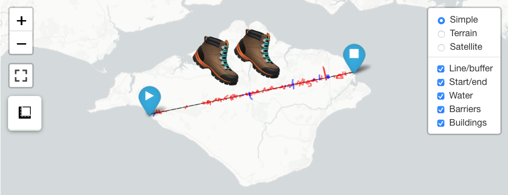
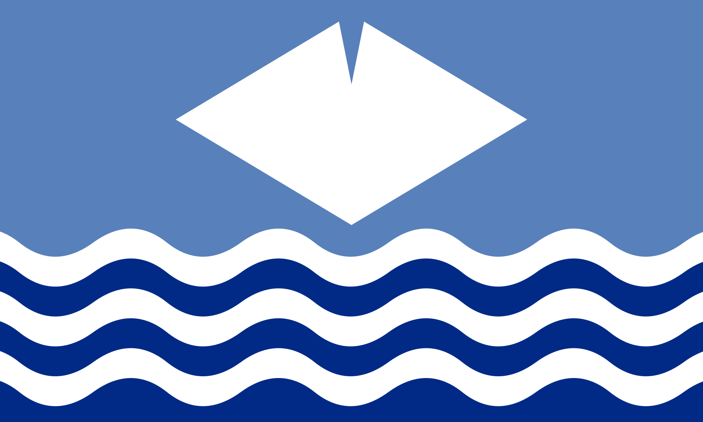
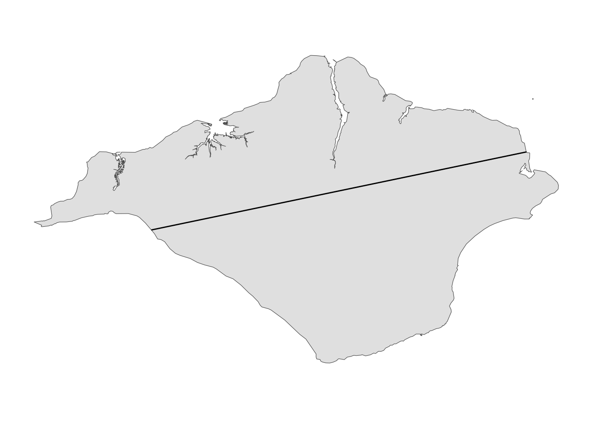

suppressPackageStartupMessages({
library(geojsonio)
library(leaflet)
library(leaflet.extras)
library(osmextract)
library(sf)
library(tidyverse)
})
tl;dr
I used R to identify and map hazards on a potential straight-line walking route across the Isle of Wight, mimicking Tom ‘GeoWizard’ Davies’s ‘Mission Across’ series of YouTube videos. You can jump straight to the interactive map.
GeoWizard
Tom ‘GeoWizard’ Davies is perhaps best known for his YouTube channel, where he posts Twitch stream highlights of Geoguessr, a game where you pinpoint a randomised location based only Google StreetView.
He also chronicles real-life trekking adventures, usually with a twist. Particularly captivating are the ‘Mission Across’ videos, where Tom attempts to cross a country in a straight line on foot. That includes having to clamber over hedges, swim across ponds, get stuck in bogs and risk the wrath of local farmers and landowners. So far this has covered Wales, Wales again and Norway, with a Scotland series due this month.
Of course, this requires a lot of planning to decide what the best route is and to make sure you don’t traipse directly through someone’s living room in your muddy boots. Typically this might involve lots of time in GIS software and various online mapping services.
I learnt recently of the {osmextract} package for the R language, which fetches geographic features from OpenStreetMap, and wondered how easy it would be to use R to do a light-touch assessment of straight line routes in a ‘Mission Across’ style. Basically, can we work out the number and type of obstructions we’d face on a given route?
You can jump straight to an interactive map with my example for the Isle of Wight, or keep reading for the code and an explanation.
As an aside, Tom has also made the album ‘16 Bit Adventure’ under the moniker ‘Amynedd’; music which accompanies the ‘Mission Across’ videos. Press play here for inspiration as you read on.
Code walkthrough
Packages
R is very capable as a code-led tool for geospatial manipulation and mapping. Along with {tidyverse} for data wrangling, there’s a few geospatial packages we need: {geojsonio} lets us read GeoJSON files, {sf} is for handling ‘special features’ geometry in a ‘tidy’ way, and {leaflet} lets us create interactive maps. {osmextract} was the main motivation for this post; it fetches OpenStreetMap features pretty painlessly.
All these packages can all be downloaded from CRAN with install.packages().
While we’re here, I’m going to turn off ‘spherical geometry’. This is a fancy way of saying that we’re going to pretend the Earth is flat (!) to avoid some awkward geospatial maths. I don’t think that’s going to be a big deal for the scale of this demo.
sf_use_s2(FALSE)Spherical geometry (s2) switched offThe boundary
For purposes of this post, I wanted to look at a small, contained, ‘regularly-shaped’ geographic area to keep things simple. It didn’t have to be a country.
I settled on the Isle of Wight (IOW)1, a small island off the south-coast of England. It’s mostly rural, with farms, hedges and waterways to cross, but there are certainly more built-up areas. It also helps that the IOW is featured in the {osmextract} documentation!

First thing is to fetch a polygon that represents the extent of the island. Fortunately, Local Authority District (LAD) boundaries for the UK are available to download from the Official for National Statistics (ONS) in GeoJSON form2. We can download the file and filter for the IOW, specifically.
# Download geojson
geojson_url <- "https://services1.arcgis.com/ESMARspQHYMw9BZ9/arcgis/rest/services/LAD_DEC_2020_UK_BGC/FeatureServer/0/query?outFields=*&where=1%3D1&f=geojson"
tmp <- tempdir()
geojson_path <- file.path(tmp, "lads.geojson")
download.file(geojson_url, geojson_path)
# Read LAD boundaries, filter to IOW
iow_extent <- geojson_read(geojson_path, what = "sp") %>%
st_as_sf(crs = 4326) %>%
filter(LAD20NM == "Isle of Wight")
unlink(tmp)I’ve used boundaries that are ‘clipped to the coastline’ because I don’t think you should have to swim out to the low-water mark to complete such a challenge.
OpenStreetMap features
We want to identify features like hedgerows, buildings and waterways that will become obstructions for our imaginary walk across the island. The oe_get() function from {osmextra} is an easy way to pull features from OpenStreetMap en masse. You can supply a location and receive features within that area.
First, the polygonal features, which you can get with argument layer = "multipolygons". You can see that a geometry column is returned, which contains the coordinates for the polygons.
# Fetch polygonal features for IoW
osm_polys <- oe_get(
"Isle of Wight", # geographic area of interest
layer = "multipolygons", # fetch polygons
stringsAsFactors = FALSE, # return character-class
quiet = TRUE # don't print info
) %>%
st_transform(crs = 4326) # latlong coord reference system
# Limited preview
glimpse(select(osm_polys, osm_id, name, type, geometry))Rows: 84,599
Columns: 4
$ osm_id <chr> "4763", "5922", "6022", "7141", "7316", "29744", "70978", "71…
$ name <chr> NA, NA, NA, NA, NA, "Ryde Canoe Lake", "Quarr Abbey", NA, "Be…
$ type <chr> "multipolygon", "multipolygon", "multipolygon", "multipolygon…
$ geometry <MULTIPOLYGON [°]> MULTIPOLYGON (((-1.251425 5..., MULTIPOLYGON (((…Of course, we can grab line features too. The default for layer is lines, so we don’t need to supply this argument.
# Fetch line features for IoW
osm_lines <- oe_get(
"Isle of Wight",
stringsAsFactors = FALSE,
quiet = TRUE
) %>%
st_transform(crs = 4326)For convenience, I’m simplifying the features down to the ones we care about. For Tom, hedgerows were a constant nuisance, waterways were cold and perilous, and buildings could contain angry landowners. We want to avoid them all, ideally.
We can create a function to extract named features (we want rows containing ‘barriers’, ‘buildings’, ‘natural’ and ‘waterway’ features), and then iterate over our lines and polygons to isolate them. I’ve put them into a single object so it’s easier to reference them later.
# Filter for a single feature type from oe_get() output
# 'sf_in' is output from oe_get(); 'feature' is the feature we want
isolate_feature <- function(sf_in, feature) {
sf_in %>%
filter(!is.na(sf_in[[feature]])) %>% # filter for feature
select(osm_id, type = all_of(feature), geometry) # simplify object
}
# Get all the features as a list object with one element per feature
features <- map2(
list(osm_lines, osm_polys, osm_polys, osm_lines),
list("barrier", "building", "natural", "waterway"),
isolate_feature
) %>%
set_names("barrs", "bldgs", "natur", "wways")
# Limited preview of the waterways data
glimpse(features$wways)Rows: 2,714
Columns: 3
$ osm_id <chr> "3027797", "3127808", "4680059", "5171926", "5171930", "51722…
$ type <chr> "river", "river", "river", "stream", "ditch", "river", "strea…
$ geometry <LINESTRING [°]> LINESTRING (-1.272943 50.62..., LINESTRING (-1.290…The line
We need to specify a straight-line route.3 For this demonstration, and in interests fo speed, I’ve just chosen one that looks alright by eye in terms of obstructions. Kinda.
Of course, you can use the approach outlined in this post to try other lines and discover quantitatively which ones have the fewest obstructions. That’s the subject of an upcoming Shiny app, which will allow the user to provide a line and get feedback on the number and count of hazards.
Crucially, the line is clipped to the boundary of the island, so it goes from coast to coast.
# Create a straight line
# 'x1', etc, are start/end latlongs; 'boundary_poly' is the GeoJSON
make_line <- function(x1, y1, x2, y2, boundary_poly) {
x <- st_linestring(matrix(c(y1, y2, x1, x2), ncol = 2)) # to matrix
y <- st_sfc(x, crs = 4326) # set coord reference system
st_intersection(y, boundary_poly) # clip line to island boundary
}
# Hard-coded start/end latlongs
start_x <- 50.658; start_y <- -1.472
end_x <- 50.707; end_y <- -1.101
# Build line between the points, clip to IOW boundary
line <- make_line(start_x, start_y, end_x, end_y, iow_extent)although coordinates are longitude/latitude, st_intersection assumes that they
are planar# Preview
glimpse(line)sfc_LINESTRING of length 1; first list element: 'XY' num [1:2, 1:2] -1.47 -1.1 50.66 50.71Here’s a quick preview of where our line is:
ggplot() +
geom_sf(data = iow_extent) +
geom_sf(data = line) +
ggthemes::theme_map()
The platinum zone
In practice it’s very difficult to keep exactly to the line and some deviation may be required at a landowner’s request, for example. What’s an acceptable amount of wiggle room?
Tom spoke in one of his videos about assigning scores to a mission based on minimal deviation from the line. For example, staying within 25 m of the line either side would be a ‘platinum’ standard.
We can build a buffer around our line to create a platinum zone, which will be a useful visual aid in the final map.
# Create a buffer around the straight line
# 'line' as created with make_line(); 25m is 'platinum' standard
make_buffer <- function(straight_line, buffer_size = 25) {
x <- st_transform(straight_line, crs = 27700) # line to draw buffer around
y <- st_buffer(x, dist = buffer_size)
st_transform(y, crs = 4326) # reset coord reference system
}
# Generate a 25m buffer ('platinum standard') around the line
buffer <- make_buffer(line)
# Preview
glimpse(buffer)sfc_POLYGON of length 1; first list element: List of 1
$ : num [1:123, 1:2] -1.1 -1.1 -1.1 -1.1 -1.1 ...
- attr(*, "class")= chr [1:3] "XY" "POLYGON" "sfg"Obstructions
Our features object currently has all the lines and polygons within the IOW boundary, but we only want the ones that come in contact with (i.e. intersect) with our proposed route. The st_intersects() function from {sf} does exactly that.
# Extract features that intersect with the line or buffer geometry
# 'features_sf' contains the features; 'path_sf' for what to intersect
find_obs <- function(features_sf, path_sf) {
row_nums <- st_intersects(path_sf, features_sf)[[1]] # rows with obstruction
slice(features_sf, row_nums) # extract matching rows
}
# Find intersection between features and line
obstructions <- map(features, ~find_obs(.x, line)) %>%
set_names("barrs", "bldgs", "natur", "wways")
# Limited preview
glimpse(obstructions$wways)Rows: 11
Columns: 3
$ osm_id <chr> "471224569", "552565448", "552565555", "552565565", "55650679…
$ type <chr> "stream", "stream", "stream", "stream", "ditch", "ditch", "di…
$ geometry <LINESTRING [°]> LINESTRING (-1.285131 50.67..., LINESTRING (-1.216…We can create a quick table to see what the obstructions are for this route.
tribble(
~Type, ~Count,
"Barriers", nrow(obstructions$barrs),
"Buildings", nrow(obstructions$bldgs),
"Waterways", nrow(obstructions$wways),
"Water bodies", nrow(filter(obstructions$natur, type == "water")
)
) %>% knitr::kable()| Type | Count |
|---|---|
| Barriers | 92 |
| Buildings | 7 |
| Waterways | 11 |
| Water bodies | 4 |
You can see how this information is useful if you wanted to try other straight-line paths and see how they stack up against each other. Maybe you want to reduce the number of barriers (typically hedgerows); maybe you don’t mind swimming across a large water body.
Map
So we have the objects we need: our straight-line route, the platinum-zone buffer and all the features that cross our path. Now to map it. We can use the {leaflet} package to layer these up on an interactive map, allowing the user to inspect the route and the hazards along the way.
Click to expand the full mapping code
The basic approach here is to addproviderTiles() for underlying maps (I’ve chosen these to help add extra context to the route); use addPolygons and addPolylines() to supply the line, buffer and the features as separate ‘layers’ that can be turned on or off; use addAwesomeMarkers() for clickable pop-up feature labels; and supply additional mapping conveniences with addMeasure() and, from {leaflet.extras}, addFullscreenControl() (both functions do what their names suggest).
# Set multi-use variables
marker_fill <- "darkblue"
icon_fill <- "white"
col_line <- "#000"
col_artifical <- "#F00"
col_water <- "#00F"
weight_line <- 1
weight_obstruction <- 2
alpha_all <- 0.5
# Interactive map
leaflet() %>%
# Base groups: map tiles
addProviderTiles("CartoDB.PositronNoLabels", group = "Simple") %>%
addProviderTiles("Esri.WorldTopoMap", group = "Terrain") %>%
addProviderTiles("Esri.WorldImagery", group = "Satellite") %>%
# Overlay groups: line and buffer
addPolygons(
data = buffer, group = "Line/buffer",
color = col_line, weight = weight_line, dashArray = 4,
fill = TRUE, opacity = alpha_all
) %>%
addPolylines(
data = line, group = "Line/buffer",
color = col_line, weight = weight_line,
fill = FALSE
) %>%
# Overlay groups: start and end points
addAwesomeMarkers(
lng = start_y, lat = start_x, group = "Start/end",
icon = awesomeIcons(
markerColor = "blue",
icon = "play", library = "fa", iconColor = "#FFF"
),
popup = paste0("<center>Start<br>", start_x, ", ", start_y, "<center>")
) %>%
addAwesomeMarkers(
lng = end_y, lat = end_x, group = "Start/end",
icon = awesomeIcons(
markerColor = "blue",
icon = "stop", library = "fa", iconColor = "#FFF"
),
popup = paste0("<center>End<br>", end_x, ", ", end_y, "<center>")
) %>%
# Overlay groups: features in buffer
addPolylines(
data = obstructions$barrs, group = "Barriers",
color = col_artifical, weight = weight_obstruction,
label = paste("Barrier:", obstructions$barrs$type)
) %>%
addPolygons(
data = obstructions$bldgs, group = "Buildings",
color = col_artifical, weight = weight_obstruction,
fillColor = col_artifical, fillOpacity = alpha_all,
label = paste("Building:", obstructions$bldgs$type)
) %>%
addPolygons(
data = filter(obstructions$natur, type == "water"), group = "Water",
color = col_water, weight = weight_obstruction,
fillColor = col_water, fillOpacity = alpha_all,
label = "Water body"
) %>%
addPolylines(
data = obstructions$wways, group = "Water",
color = col_water, weight = weight_obstruction,
label = paste("Waterway:", obstructions$wways$type)
) %>%
# Control which layers are shown
addLayersControl(
baseGroups = c("Simple", "Terrain", "Satellite"), # radio button
overlayGroups = c( # checkboxes
"Line/buffer", "Start/end", # line-related
"Water", "Barriers", "Buildings" # obstructions
),
position = "topright",
options = layersControlOptions(collapsed = FALSE)
) %>%
# Other map features
addMeasure( # tool for users to measure distances
position = "topleft",
primaryLengthUnit = "meters",
primaryAreaUnit = "sqmeters"
) %>%
addFullscreenControl() # clickable full-screen buttonSo, you can inspect the route interactively by zoom and dragging, by hovering over highlighted features to see what they are, and by turning on and off the different map and feature layers for more or less context.
Next
There’s a lot of stuff missing from this approach to make it useful for actually planning a straight-line route. For example, I haven’t included elevation or land-use type (you don’t want to spend a few kilometres in a marsh). You’re also restricted to a two-dimensional overhead view.
Of course, I also hard-coded the start and end points for this demo. The real power of this approach would be to let the user choose where they want to start and end and feed back on the identity and number of obstructions for each line suggested. To this end, I’ve started developing a simple Shiny app.
Disclaimer
Am I encouraging you to trespass? No. Am I encouraging you to take advantage of {osmextra}, {sf} and {leaflet} for mapping in R? Yes.
Environment
Session info
Last rendered: 2023-07-16 13:42:29 BSTR version 4.3.1 (2023-06-16)
Platform: aarch64-apple-darwin20 (64-bit)
Running under: macOS Ventura 13.2.1
Matrix products: default
BLAS: /Library/Frameworks/R.framework/Versions/4.3-arm64/Resources/lib/libRblas.0.dylib
LAPACK: /Library/Frameworks/R.framework/Versions/4.3-arm64/Resources/lib/libRlapack.dylib; LAPACK version 3.11.0
locale:
[1] en_US.UTF-8/en_US.UTF-8/en_US.UTF-8/C/en_US.UTF-8/en_US.UTF-8
time zone: Europe/London
tzcode source: internal
attached base packages:
[1] stats graphics grDevices utils datasets methods base
other attached packages:
[1] lubridate_1.9.2 forcats_1.0.0 stringr_1.5.0
[4] dplyr_1.1.2 purrr_1.0.1 readr_2.1.4
[7] tidyr_1.3.0 tibble_3.2.1 ggplot2_3.4.2
[10] tidyverse_2.0.0 sf_1.0-14 osmextract_0.4.1
[13] leaflet.extras_1.0.0 leaflet_2.1.2 geojsonio_0.11.1
loaded via a namespace (and not attached):
[1] gtable_0.3.3 xfun_0.39 htmlwidgets_1.6.2
[4] lattice_0.21-8 tzdb_0.4.0 leaflet.providers_1.9.0
[7] vctrs_0.6.3 tools_4.3.1 crosstalk_1.2.0
[10] generics_0.1.3 curl_5.0.1 proxy_0.4-27
[13] fansi_1.0.4 pkgconfig_2.0.3 KernSmooth_2.23-21
[16] lifecycle_1.0.3 farver_2.1.1 compiler_4.3.1
[19] munsell_0.5.0 jqr_1.2.3 htmltools_0.5.5
[22] class_7.3-22 yaml_2.3.7 lazyeval_0.2.2
[25] pillar_1.9.0 ellipsis_0.3.2 classInt_0.4-9
[28] tidyselect_1.2.0 digest_0.6.31 stringi_1.7.12
[31] ggthemes_4.2.4 fastmap_1.1.1 grid_4.3.1
[34] colorspace_2.1-0 cli_3.6.1 magrittr_2.0.3
[37] crul_1.4.0 utf8_1.2.3 e1071_1.7-13
[40] withr_2.5.0 scales_1.2.1 sp_2.0-0
[43] timechange_0.2.0 httr_1.4.6 rmarkdown_2.23
[46] hms_1.1.3 evaluate_0.21 knitr_1.43.1
[49] V8_4.3.2 geojson_0.3.4 rlang_1.1.1
[52] Rcpp_1.0.11 glue_1.6.2 DBI_1.1.3
[55] httpcode_0.3.0 geojsonsf_2.0.3 rstudioapi_0.15.0
[58] jsonlite_1.8.7 R6_2.5.1 units_0.8-2 Reuse
CC BY-NC-SA 4.0